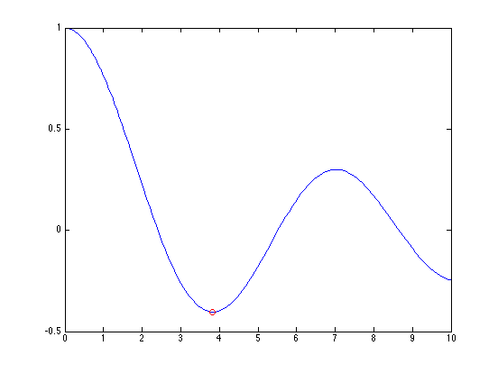

Contents
- derivative of exp(x), at x == 0
- DERIVEST can also use an inline function
- Higher order derivatives (second derivative)
- Higher order derivatives (third derivative)
- Higher order derivatives (up to the fourth derivative)
- Evaluate the indicated (default = first) derivative at multiple points
- Specify the step size (default stepsize = 0.1)
- Provide other parameters via an anonymous function
- The second derivative should be positive at a minimizer.
- Compute the numerical gradient vector of a 2-d function
- Compute the numerical Laplacian function of a 2-d function
- Compute the derivative of a function using a central difference scheme
- Compute the derivative of a function using a forward difference scheme
- Compute the derivative of a function using a backward difference scheme
- Although a central rule may put some samples in the wrong places, it may still succeed
- But forcing the use of a one-sided rule may be smart anyway
- Control the behavior of DERIVEST - forward 2nd order method, with only 1 Romberg term
- Functions should be vectorized for speed, but its not always easy to do.
% DERIVEST demo script % This script file is designed to be used in cell mode % from the matlab editor, or best of all, use the publish % to HTML feature from the matlab editor. Older versions % of matlab can copy and paste entire blocks of code into % the Matlab command window. % DERIVEST is property/value is driven for its arguments. % Properties can be shortened to the
derivative of exp(x), at x == 0
[deriv,err] = derivest(@(x) exp(x),0)
deriv =
1
err =
1.4046e-14
DERIVEST can also use an inline function
[deriv,err] = derivest(inline('exp(x)'),0)
deriv =
1
err =
1.4046e-14
Higher order derivatives (second derivative)
Truth: 0
[deriv,err] = derivest(@(x) sin(x),pi,'deriv',2)
deriv =
-5.5372e-19
err =
1.865e-18
Higher order derivatives (third derivative)
Truth: 1
[deriv,err] = derivest(@(x) cos(x),pi/2,'der',3)
deriv =
1
err =
4.3657e-12
Higher order derivatives (up to the fourth derivative)
Truth: sqrt(2)/2 = 0.707106781186548
[deriv,err] = derivest(@(x) sin(x),pi/4,'d',4)
deriv =
0.70711
err =
1.9122e-05
Evaluate the indicated (default = first) derivative at multiple points
[deriv,err] = derivest(@(x) sin(x),linspace(0,2*pi,13))
deriv =
Columns 1 through 7
1 0.86603 0.5 0 -0.5 -0.86603 -1
Columns 8 through 13
-0.86603 -0.5 0 0.5 0.86603 1
err =
Columns 1 through 7
1.0412e-15 1.4725e-15 2.5102e-14 0 1.3754e-14 2.7429e-14 1.8034e-15
Columns 8 through 13
3.0284e-14 4.9044e-14 0 3.2092e-15 1.2987e-13 2.5504e-15
Specify the step size (default stepsize = 0.1)
deriv = derivest(@(x) polyval(1:5,x),1,'deriv',4,'FixedStep',1)
deriv =
24
Provide other parameters via an anonymous function
At a minimizer of a function, its derivative should be essentially zero. So, first, find a local minima of a first kind bessel function of order nu.
nu = 0; fun = @(t) besselj(nu,t); fplot(fun,[0,10]) x0 = fminbnd(fun,0,10,optimset('TolX',1.e-15)) hold on plot(x0,fun(x0),'ro') hold off deriv = derivest(fun,x0,'d',1)
x0 =
3.8317
deriv =
-2.3285e-09
 The second derivative should be positive at a minimizer.
deriv = derivest(fun,x0,'d',2)
deriv =
0.40276
Compute the numerical gradient vector of a 2-d function
Note: the gradient at this point should be [4 6]
fun = @(x,y) x.^2 + y.^2; xy = [2 3]; gradvec = [derivest(@(x) fun(x,xy(2)),xy(1),'d',1), ... derivest(@(y) fun(xy(1),y),xy(2),'d',1)]
gradvec =
4 6
Compute the numerical Laplacian function of a 2-d function
Note: The Laplacian of this function should be everywhere == 4
fun = @(x,y) x.^2 + y.^2; xy = [2 3]; lapval = derivest(@(x) fun(x,xy(2)),xy(1),'d',2) + ... derivest(@(y) fun(xy(1),y),xy(2),'d',2)
lapval =
4
Compute the derivative of a function using a central difference scheme
Sometimes you may not want your function to be evaluated above or below a given point. A 'central' difference scheme will look in both directions equally.
[deriv,err] = derivest(@(x) sinh(x),0,'Style','central')
deriv =
1
err =
1.0412e-15
Compute the derivative of a function using a forward difference scheme
But a forward scheme will only look above x0.
[deriv,err] = derivest(@(x) sinh(x),0,'Style','forward')
deriv =
1
err =
3.1516e-15
Compute the derivative of a function using a backward difference scheme
And a backward scheme will only look below x0.
[deriv,err] = derivest(@(x) sinh(x),0,'Style','backward')
deriv =
1
err =
3.1516e-15
Although a central rule may put some samples in the wrong places, it may still succeed
[d,e,del]=derivest(@(x) log(x),.001,'style','central')
d =
1000
e =
1.7072e-10
del =
3.0518e-05
But forcing the use of a one-sided rule may be smart anyway
[d,e,del]=derivest(@(x) log(x),.001,'style','forward')
d =
1000
e =
6.5547e-08
del =
0.00012207
Control the behavior of DERIVEST - forward 2nd order method, with only 1 Romberg term
Compute the first derivative, also return the final stepsize chosen
[deriv,err,fdelta] = derivest(@(x) tan(x),pi,'deriv',1,'Style','for','MethodOrder',2,'RombergTerms',1)
deriv =
1
err =
2.8399e-13
fdelta =
0.0011984
Functions should be vectorized for speed, but its not always easy to do.
[deriv,err] = derivest(@(x) x.^2,0:5,'deriv',1) [deriv,err] = derivest(@(x) x^2,0:5,'deriv',1,'vectorized','no')
deriv =
0 2 4 6 8 10
err =
0 4.6563e-15 9.3127e-15 1.178e-14 1.8625e-14 2.3559e-14
deriv =
0 2 4 6 8 10
err =
0 4.6563e-15 9.3127e-15 1.178e-14 1.8625e-14 2.3559e-14